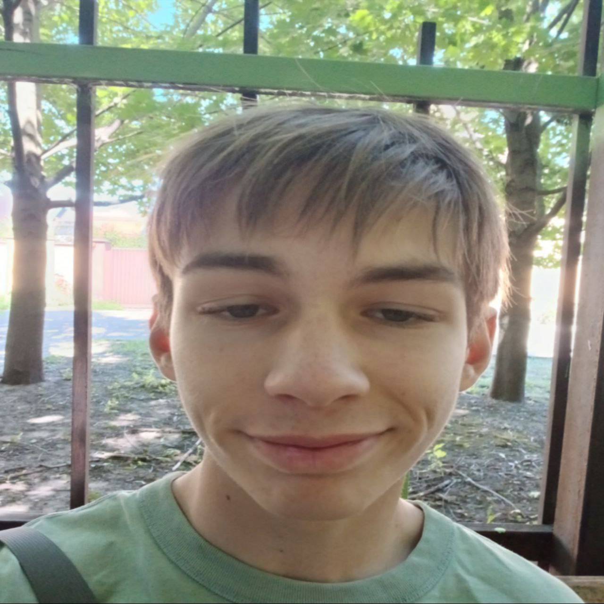
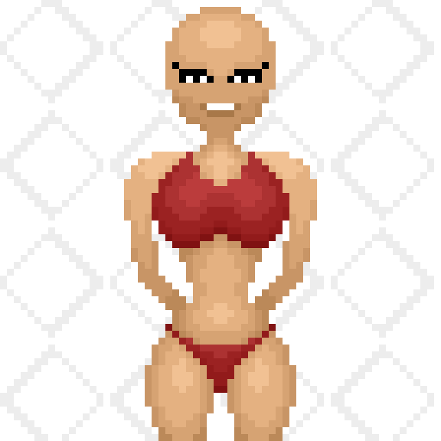
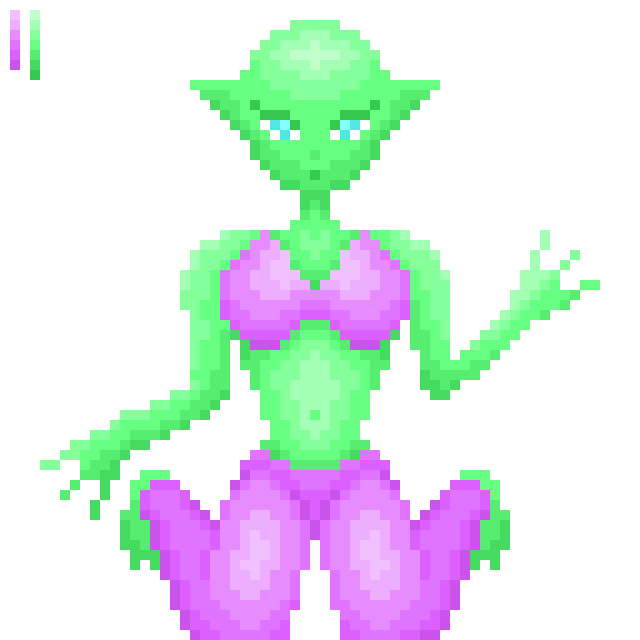

Fedir D. / chromakid
Junior Unity Developer • Game Designer • Pixel Enthusiast

Who am I?
Junior C# and Unity Developer with strong design and branding skills. Passionate about game development, interactive experiences, and clean code. Experienced in both technical and visual aspects of development — from gameplay logic to UI/UX, logo creation, and motion design. Enthusiastic about learning, community-driven initiatives, and delivering meaningful work that combines creativity and functionality.

My Skills and Preferences
- Development: C#, Unity, .NET, OOP, GitHub, GitHub Pages, HTML, CSS, API integration, Python (Telegram bots), Firebase (basic)
- Design & Media: Illustrator, Photoshop, Premiere Pro, UI, logos, branding
- Soft Skills: Communication, teamwork, self-learning, time management, creative thinking

My Games
- Christmas Game Jam (Itch.io)
Built and submitted a game during a $1500 prize jam.
Focused on gameplay logic, character behavior, and polish.
Collaborated with Ukrainian devs and artists.
- Personal Projects
Short pixel art games using Unity2D and C#.
Focused on emotion, visuals, and storytelling.
Integrated Telegram bots using Python.

My Art




What am I looking for?
I'm currently looking for a team of passionate creators. I want to collaborate with developers, artists, and storytellers who care about emotion, style, and experimentation in games. If you're building something thoughtful or experimental, I'm eager to contribute.